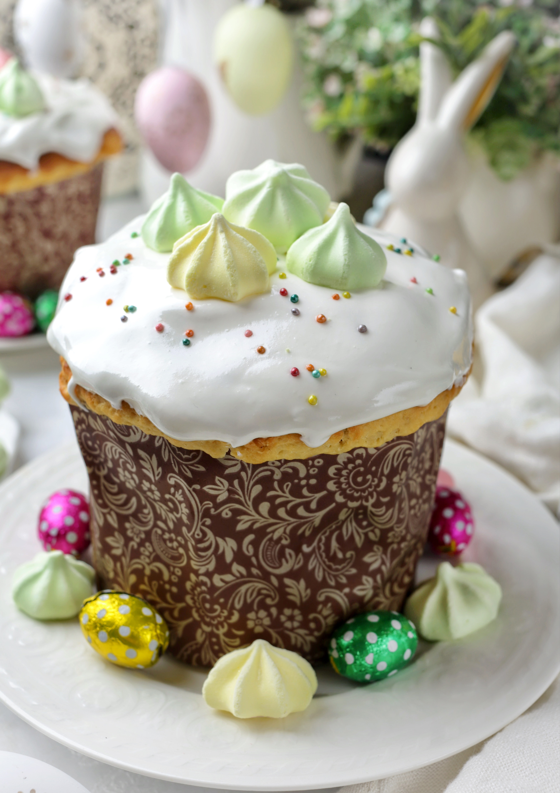

Очень простой рецепт, в котором надо только замесить тесто и разложить по формам. Одно но: для расстойки требуется время — 5 часов.
Это не классический кулич с волокнистым мякишем (нет многократного обминания), но мякиш у него воздушный, а вкус насыщенный и сдобный. Если хочется получить волокнистую структуру, после замеса тесто можно оставить на 1,5 часа на расстойку, обмять, сделать складывание конвертом, снова накрыть и оставить на 1–1,5 часа. После этого разложить по формам.
В тесте для куличей рекомендуем использовать свежие дрожжи — именно они дают тот самый незабываемый аромат пасхальной сдобы. Для кулича желательно замочить изюм, курагу и вяленые ягоды заранее, за сутки: промыть, слегка обсушить и залить 100 мл коньяка или рома. Если без алкоголя — залить на полчаса водой, промыть и обсушить.
Бумажные формочки обычно не требуют дополнительного смазывания. Металлические формы лучше выстелить бумагой для выпечки. Можно оставить куличи для расстойки на ночь в холодильнике (уменьшив дрожжи до 25 г свежих или 7 г сухих).